Breakthroughs in Astrophysics#
“I feel carried away and possessed by an unutterable rapture over the divine spectacle of the heavenly harmony.” – Johannes Kepler, Harmonices Mundi, 1619
Astrophysics is the science of applying the same handful of dynamical laws
– gravity, hydrostatic equilibrium, and their statistical-mechanical
consequences – to objects ranging from a single star’s interior to the
motion of a hundred billion galaxies. physicskit.astro gathers the
computational core of that story: orbit determination, self-gravitating
stellar structure, direct N-body dynamics, and the dark-matter halos that
dominate galactic rotation. This chronology traces the major breakthroughs
behind it, from Kepler’s laws to the large-scale N-body simulations of the
present day, with a pointer to the corresponding implementation in this
package at each stop.
1609 – Kepler’s Laws of Planetary Motion#
Working from Tycho Brahe’s unprecedentedly precise observations of Mars, Johannes Kepler discovered that the planet’s orbit is not the circle (or combination of circles) that two thousand years of astronomy had assumed, but an ellipse with the Sun at one focus – and that a line from the Sun to the planet sweeps out equal areas in equal times. Both laws appeared in Astronomia Nova (1609). A decade later, in Harmonices Mundi (1619), he added a third: the square of a planet’s orbital period is proportional to the cube of its orbit’s semi-major axis,
These were purely empirical regularities, extracted from data with no underlying dynamical explanation – that would take Newton another sixty- eight years.
Implementation: physicskit.astro.orbital_mechanics.orbital_period()
implements Kepler’s third law exactly (in the \(\mu = GM\) form Newton
would later supply the constant of proportionality for);
state_from_orbital_elements()
constructs the elliptical geometry of Kepler’s first law directly from a
semi-major axis and eccentricity.
References: J. Kepler, Astronomia Nova (1609), Ch. 58-60 (Laws I-II); Harmonices Mundi (1619), Bk. V, Ch. 3 (Law III). Books, not journal articles – there is no DOI to cite.
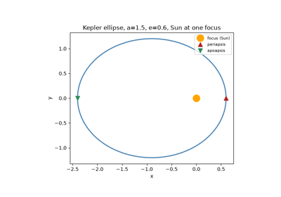
Kepler’s laws and Newton’s inverse-square gravity
1687 – Newton’s Law of Universal Gravitation#
In the Philosophiae Naturalis Principia Mathematica, Isaac Newton showed that Kepler’s three empirical laws are not independent facts about the solar system at all, but a single mathematical consequence of one dynamical law: every pair of masses attracts with a force
along the line joining them. Applied to a single planet orbiting the Sun, this inverse-square law forces the orbit to be a conic section, recovers Kepler’s equal-areas law as a statement of angular-momentum conservation, and fixes the constant in Kepler’s third law as \(\mu = GM\). The same force law, summed pairwise over arbitrarily many bodies rather than just two, is the starting point for every N-body calculation that followed.
Implementation: physicskit.astro.orbital_mechanics.vis_viva_speed()
gives the two-body orbital speed implied directly by Newtonian energy
conservation, \(v=\sqrt{\mu(2/r-1/a)}\);
physicskit.astro.nbody.gravitational_acceleration() is the same
inverse-square law summed pairwise over N bodies rather than two.
References: I. Newton, Philosophiae Naturalis Principia Mathematica (1687), Book I, Prop. XI; Book III. A book, not a journal article – there is no DOI to cite.
Kepler’s laws and Newton’s inverse-square gravity
1801 – Gauss’s Method of Orbit Determination#
When Giuseppe Piazzi discovered the dwarf planet Ceres in January 1801, he was able to track it for only a few weeks before it disappeared into the Sun’s glare, leaving far too short an arc for any existing method to predict where it would reappear. Carl Friedrich Gauss, then 24, devised a new procedure – built on his (then-unpublished) method of least squares – for computing a complete set of six orbital elements from as few as three observed positions and times. His prediction let Franz Xaver von Zach recover Ceres in December 1801, and Gauss set out the full method in Theoria Motus Corporum Coelestium in Sectionibus Conicis Solem Ambientium (1809), founding both modern orbit determination and much of practical statistical estimation.
Implementation:
physicskit.astro.orbital_mechanics.orbital_elements_from_state()
performs the modern version of exactly this step – extracting the six
classical elements (\(a, e, i, \Omega, \omega, \nu\)) from a state
vector – while
state_from_orbital_elements()
inverts it, together forming the round trip between observed motion and
orbital elements that Gauss’s method first made possible from sparse data.
References: C. F. Gauss, Theoria Motus Corporum Coelestium in Sectionibus Conicis Solem Ambientium (Perthes, Hamburg, 1809). A book, not a journal article – there is no DOI to cite.
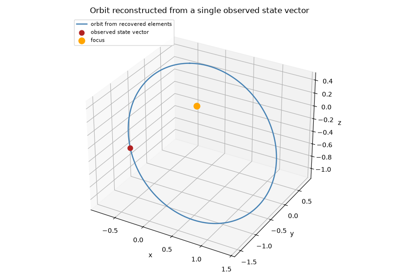
Gauss’s problem: recovering orbital elements from a state vector
1890 – Poincare and the Three-Body Problem#
King Oscar II of Sweden’s 1889 prize competition asked, in effect, whether the solar system’s stability could be settled once and for all: does the N-body problem admit a general solution, expressible in convergent series or closed form, from which any configuration’s future could in principle be read off? Henri Poincare’s prize-winning memoir, later expanded into Sur le probleme des trois corps et les equations de la dynamique (1890), answered no. Studying the restricted three-body problem – two massive bodies on a fixed circular orbit and a third, massless body moving under their combined gravity – he showed that the intersections of stable and unstable manifolds near an unstable periodic orbit can cross transversally infinitely many times, weaving the tangled structure now called a homoclinic tangle. No power series in the masses converges to a general solution, and trajectories starting arbitrarily close together can separate at an exponential rate, becoming unpredictable in practice far sooner than any finite-precision measurement of the initial conditions could anticipate. It was the first rigorous demonstration of what would later be called deterministic chaos, decades before Lorenz’s 1963 rediscovery of the same phenomenon in a driven fluid gave it its modern name – and it left direct numerical integration, rather than a closed-form formula, as the only general way to follow an N-body system’s evolution.
Connection: Poincare’s proof that no general closed-form solution
exists is the deep reason physicskit.astro.nbody.NBodySystem
takes the form it does – a symplectic numerical integrator stepping the
equations of motion forward in time, rather than a formula evaluated at
an arbitrary time, because for three or more mutually gravitating bodies
no such formula exists. The exponential separation of nearby trajectories
he discovered in the restricted three-body problem is the same sensitive
dependence on initial conditions that
physicskit.chaos.utils.metrics.benettin_lyapunov_spectrum()
quantifies in general dynamical systems; comparing two
NBodySystem runs from initial conditions
perturbed by an infinitesimal amount reproduces Poincare’s homoclinic
tangle directly, for any N-body configuration less symmetric than the
figure-eight choreography below.
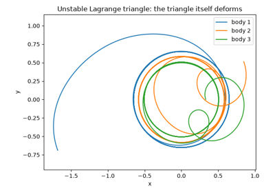
Poincare’s discovery: sensitive dependence in the three-body problem
1902 – Jeans Instability and the Jeans Mass#
James Jeans asked a question stellar-structure theory had so far taken for granted: why does a self-gravitating cloud of gas ever begin to collapse at all, rather than sitting indefinitely in hydrostatic balance? In “The Stability of a Spherical Nebula” (1902), he linearized the equations of self-gravitating fluid motion around a uniform background and found that small density perturbations grow rather than oscillate whenever their wavelength exceeds a critical value,
set by the competition between the sound speed \(c_s\) (which communicates pressure support across the perturbation) and the free-fall time set by the local density \(\rho\) (which sets how fast gravity can act). The corresponding Jeans mass, the mass contained within a sphere of diameter \(\lambda_J\), is the smallest clump of gas that can collapse under its own gravity rather than being smoothed out by pressure. The result is the starting point of gravitational-collapse theory generally, from individual star formation inside a molecular cloud to the growth of the density perturbations that seed cosmic large-scale structure.
Connection: the Jeans criterion is the implicit boundary condition on
every hydrostatic-equilibrium calculation that follows in this
chronology: a cloud that fails it collapses, while one that satisfies it
settles into the balance physicskit.astro.stellar_structure.lane_emden()
and PolytropicStar describe
below. The same linear gravitational-instability analysis, generalized to
an expanding cosmological background, underlies the growing density
perturbations that physicskit.astro.cosmic_web.first_caustic_time()
and zeldovich_hessian_eigenvalues()
follow forward to their first nonlinear collapse into cosmic-web
structure.
References: J. H. Jeans, “The Stability of a Spherical Nebula,” Phil. Trans. R. Soc. A 199, 1-53 (1902).
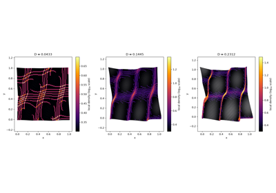
Cosmic-web formation: the Zel’dovich approximation
1870-1907 – Lane, Ritter, and Emden’s Polytropic Gas Spheres#
Jonathan Homer Lane’s 1870 paper “On the Theoretical Temperature of the Sun” was the first to treat a star as a self-gravitating sphere of gas in hydrostatic equilibrium obeying a polytropic equation of state, \(P = K\rho^{1+1/n}\) – but Lane worked out only the single adiabatic case \(n=3/2\). It was August Ritter, in a long series of papers in Wiedemann’s Annalen der Physik und Chemie spanning 1878 to 1889, who generalized the analysis to an arbitrary polytropic index \(n\), putting the equation in essentially its modern form. Robert Emden then systematized and extensively tabulated the resulting family of solutions in his 1907 monograph Gaskugeln (“Gas Spheres”), giving the dimensionless equation its modern name:
Solving this single second-order ODE for a given polytropic index \(n\) fixes the entire structure of an idealized star: its surface (the first zero of \(\theta\), at \(\xi_1\)) and, through \(\xi_1\) and the surface slope \(\theta'(\xi_1)\), its radius and mass. It remains the starting point for analytic stellar-structure theory whenever full radiative-transfer modeling is unnecessary.
Implementation: physicskit.astro.stellar_structure.lane_emden()
integrates exactly this equation;
physicskit.astro.stellar_structure.PolytropicStar builds a
physical star from one solution, exposing the surface value
xi1, the length
scale alpha, and
the resulting
radius and
mass.
References: J. H. Lane, “On the Theoretical Temperature of the Sun, under the Hypothesis of a Gaseous Mass Maintaining Its Volume by Its Internal Heat, and Depending on the Laws of Gases as Known to Terrestrial Experiment,” Amer. J. Sci., 2nd ser., 50, 57-74 (1870); A. Ritter’s generalization to arbitrary polytropic index appeared as a series of papers, “Untersuchungen uber ihre Gleichgewichtszustand,” in Wiedemann’s Annalen der Physik und Chemie, 1878-1889; R. Emden, Gaskugeln: Anwendungen der mechanischen Warmetheorie (Teubner, Leipzig, 1907).
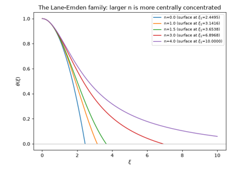
Lane-Emden polytropes: Lane, Ritter, and Emden’s gas spheres
1924 – Eddington’s Mass-Luminosity Relation#
Fifteen years before Hans Bethe worked out the nuclear reactions that actually power a star, Arthur Eddington showed that a main-sequence star’s luminosity could be predicted without knowing its energy source at all. Treating the stellar interior as a radiative envelope in hydrostatic and thermal equilibrium – the “standard model” he developed through the 1920s and collected in The Internal Constitution of the Stars (1926) – he found that the rate at which radiation can diffuse outward against gravity is fixed almost entirely by the star’s mass, giving a steep power-law relation between the two:
first presented in his 1924 paper “On the Relation between the Masses and Luminosities of the Stars” (MNRAS 84, 308). That the relation held regardless of what actually generated the star’s energy was itself a significant clue: whatever the mechanism, it had to respond to stellar conditions in a way that reproduced this same steep mass dependence.
Implementation:
physicskit.astro.stellar_structure.main_sequence_luminosity()
implements exactly this power law with the modern calibrated exponent of
3.5, valid for main-sequence stars from roughly 0.5 to 10 solar masses.
References: A. S. Eddington, “On the Relation between the Masses and Luminosities of the Stars,” MNRAS 84, 308-332 (1924).
1925 – Hohmann’s Minimum-Energy Transfer Orbit#
Three decades before the first satellite reached orbit, the German engineer Walter Hohmann worked out the most fuel-efficient way to move a spacecraft between two circular orbits. In Die Erreichbarkeit der Himmelskorper (“The Attainability of Heavenly Bodies,” 1925), he showed that the minimum-energy path is a transfer ellipse tangent to both the initial and final orbits, reached and left with a single impulsive burn at each tangent point:
where \(v_{\rm c}(r)\) is the local circular speed and \(v_{\rm t}(r)\) the speed on the transfer ellipse of semi-major axis \(a_t\), both fixed by the vis-viva equation above. Every subsequent mission that raised or lowered a spacecraft’s orbit – geostationary satellite insertion, the interplanetary cruise legs of the Mars and Venus probes, Apollo’s trans-lunar injection – has been a Hohmann transfer or a deliberate variation on one.
Implementation:
physicskit.astro.orbital_mechanics.hohmann_transfer() returns exactly
this pair of burns and the transfer time (half the transfer ellipse’s
period), built directly from
vis_viva_speed() evaluated on the
initial, transfer, and final orbits.
References: W. Hohmann, Die Erreichbarkeit der Himmelskorper (Oldenbourg, Munich, 1925). A book, not a journal article – there is no DOI to cite.
1927 – Oort and Lindblad’s Galactic Differential Rotation#
Bertil Lindblad had argued through the mid-1920s that the Milky Way could not be rotating as a rigid body – a single angular velocity for every star regardless of its distance from the center – and that this differential rotation, rather than any peculiar local motion, explained long-standing puzzles in the observed streaming of nearby stars. Jan Oort supplied the direct observational test in 1927: if the Galaxy rotates differentially about a distant center, the radial velocities and proper motions of stars near the Sun must vary with Galactic longitude \(l\) in a specific double-sine pattern set by just two numbers, now called Oort’s constants,
fixed by the local value and slope of the Galactic rotation curve \(\Omega(R) = v_c(R)/R\) at the Sun’s Galactocentric radius \(R_0\). Oort found exactly this pattern in existing stellar radial velocities, confirming Lindblad’s picture and turning “the Galaxy rotates differentially” from a hypothesis into a measured, quantitative fact – the foundation on which essentially all subsequent Galactic dynamics, including the mass discrepancies Oort himself would report five years later, is built.
Connection: physicskit.astro.galactic_dynamics.circular_velocity()
is exactly the rotation curve \(v_c(R)\) whose local value and
logarithmic slope at \(R_0\) define Oort’s constants \(A\) and
\(B\) above; the same function, evaluated instead far from the solar
neighborhood, is what later revealed the rotation curve’s unexpected
flatness in the Rubin-Ford era below.
References: J. H. Oort, “Observational Evidence Confirming Lindblad’s Hypothesis of a Rotation of the Galactic System,” Bull. Astron. Inst. Netherlands 3, 275-282 (1927).
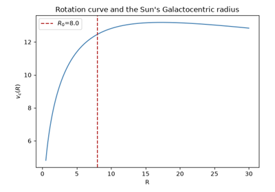
Oort and Lindblad’s differential rotation: the Oort constants
1931 – Chandrasekhar’s White Dwarf Mass Limit#
During the 1930 sea voyage from India to Cambridge, the 19-year-old Subrahmanyan Chandrasekhar worked out that a white dwarf’s electron degeneracy pressure – which supports it against gravity once nuclear fusion has ceased – cannot hold up an arbitrarily massive star. As the star’s mass grows, the degenerate electrons are forced to speeds approaching \(c\), softening the pressure-density relation until, above a critical mass, no equilibrium configuration exists at all. He published the result in 1931 (“The Maximum Mass of Ideal White Dwarfs,” ApJ 74, 81), giving the now-famous limit of roughly 1.4 solar masses – work for which he shared the 1983 Nobel Prize in Physics, more than fifty years later, after a long and public disagreement with Arthur Eddington over whether the collapse it implied could be physical at all.
Implementation:
physicskit.astro.stellar_structure.chandrasekhar_mass() returns
exactly this limit, \(M_{\rm Ch}\approx 5.83/\mu_e^2\ M_\odot\), the
standard coefficient from the \(n=3\) relativistic-degenerate polytrope
– the same Lane-Emden machinery above, at the one polytropic index for
which the star’s mass no longer depends on its central density.
References: S. Chandrasekhar, “The Density of White Dwarf Stars,” Phil. Mag., 7th ser., 11, 592-596 (1931) (the shipboard derivation); “The Maximum Mass of Ideal White Dwarfs,” ApJ 74, 81-82 (1931).
1870s-1920s – Clausius’s Virial Theorem#
Rudolf Clausius introduced the general virial theorem in 1870 as a purely mechanical identity: for any bounded system of particles interacting through conservative forces, the time-averaged kinetic energy \(\langle T\rangle\) and the time-averaged “virial” of the forces acting on it are related by \(2\langle T\rangle = -\sum_i\langle \vec F_i\cdot\vec r_i\rangle\), regardless of the details of the motion in between. For a system bound purely by inverse-square (gravitational or Coulomb) forces, the virial reduces to the potential energy itself, giving the compact and far more famous form
Arthur Eddington and James Jeans, working independently through the 1910s and 1920s, turned this generic mechanical result into a working tool of astrophysics: applied to a self-gravitating star or star cluster in statistical equilibrium, it lets an observer trade a measured velocity dispersion directly for a total mass, without needing to know the system’s detailed internal structure or force law at all – only that it is bound and has settled into a statistically steady state. It is this generic mass-from-velocity-dispersion argument, rather than any halo model specific to it, that made Zwicky’s dark-matter inference below possible in the first place.
Connection: physicskit.astro.nbody.NBodySystem.total_energy()
computes exactly the kinetic-plus-potential sum whose long-time average
the virial theorem constrains for a bound, gravitationally interacting
system; run the same balance in reverse – infer a total mass from an
observed velocity dispersion rather than compute an energy from a known
mass – and it becomes precisely the logic
physicskit.astro.galactic_dynamics.circular_velocity() encodes and
that Oort and Zwicky apply below.
References: R. Clausius, “Ueber einen auf die Waerme anwendbaren mechanischen Satz,” Ann. Phys. 141, 124-130 (1870); applied to self-gravitating stellar systems by A. S. Eddington, The Internal Constitution of the Stars (Cambridge University Press, 1926), Ch. 4, and J. H. Jeans, Problems of Cosmogony and Stellar Dynamics (Cambridge University Press, 1919) – the latter two are the standard textbook statements of the astrophysical application rather than a single original paper, and are cited with slightly less certainty than the other references in this chronology.
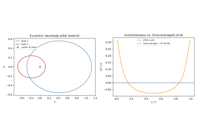
Clausius’s virial theorem for a bound gravitational orbit
1932-1933 – Oort and Zwicky’s Early Evidence for Dark Matter#
Jan Oort’s 1932 study of stars’ vertical motions perpendicular to the Galactic plane inferred, from their velocity dispersion, a local mass density that appeared to exceed what could be accounted for by visible stars and gas – the first hint, from galactic dynamics, that some mass might be going unseen (subsequent work has attributed much of this particular “Oort discrepancy” to underestimated baryonic mass rather than a dark halo). The far more dramatic case came a year later: Fritz Zwicky applied the virial theorem to redshift measurements of galaxies in the Coma Cluster and found their velocity dispersion implied a total cluster mass roughly two orders of magnitude larger than the visible starlight suggested. Zwicky called the discrepancy dunkle Materie – dark matter – in his 1933 paper, the first clear statement of the missing-mass problem at cosmological scale.
Connection: the relation
physicskit.astro.galactic_dynamics.circular_velocity() implements,
\(v_c(r)=\sqrt{GM(<r)/r}\), together with the virial-theorem logic it
encodes, is precisely the tool Oort and Zwicky used to turn observed
velocities into an inferred mass – decades before any specific halo
profile such as NFW existed to describe what that extra mass was.
References: J. H. Oort, “The Force Exerted by the Stellar System in the Direction Perpendicular to the Galactic Plane and Some Related Problems,” Bull. Astron. Inst. Netherlands 6, 249-287 (1932); F. Zwicky, “Die Rotverschiebung von extragalaktischen Nebeln,” Helv. Phys. Acta 6, 110-127 (1933); F. Zwicky, “On the Masses of Nebulae and of Clusters of Nebulae,” ApJ 86, 217-246 (1937) (English-language follow-up).
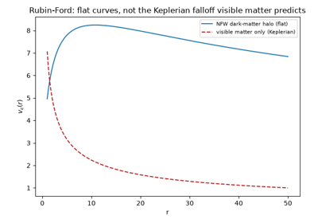
Rotation curves, the NFW halo, and the dark-matter mass discrepancy
1939 – Bethe’s Theory of Stellar Nucleosynthesis#
Fifteen years after Eddington showed that a star’s luminosity could be predicted without knowing what powered it, Hans Bethe closed the gap: in “Energy Production in Stars” (1939, Physical Review 55, 434), he worked out the two nuclear fusion chains that actually convert hydrogen into helium at stellar-core temperatures and pressures. The proton-proton chain,
dominates in stars around the Sun’s mass or below, where core temperatures are too low to overcome the larger Coulomb barrier of carbon; the carbon-nitrogen-oxygen (CNO) cycle, in which carbon-12 acts as a catalyst regenerated at the end of the cycle, dominates in more massive, hotter stars, where its steeper temperature dependence (\(\epsilon\propto T^{18}\) versus the pp chain’s \(\epsilon\propto T^4\)) lets it release energy fast enough to matter. Bethe worked out the CNO cycle’s role independently of, and at essentially the same time as, Carl Friedrich von Weizsacker, who had proposed the same catalytic cycle the year before; the two routes to it were close enough in substance and timing that the pathway is still called the Bethe-Weizsacker cycle in the German-language literature. Both routes fuse four hydrogen nuclei into one helium nucleus, releasing about 26.7 MeV per event – roughly 0.7% of the rest mass converted directly to energy – finally supplying the energy source that Eddington’s mass-luminosity relation and Lane, Ritter, and Emden’s polytropes before it had been able to describe the consequences of, but not explain.
Connection: physicskit.particle.nuclear.q_value() computes
exactly this net energy release from reactant and product rest masses,
the same balance Bethe struck for the pp chain and CNO cycle;
binding_energy_per_nucleon() shows why
the reaction is exothermic at all – helium-4 sits far higher on the
binding-energy-per-nucleon curve than hydrogen, so fusing to it releases
energy, just as fissioning from the heavy end of the curve does.
References: H. A. Bethe, “Energy Production in Stars,” Phys. Rev. 55, 434-456 (1939); H. A. Bethe and C. L. Critchfield, “The Formation of Deuterons by Proton Combination,” Phys. Rev. 54, 248-254 (1938) (pp-chain foundation); C. F. von Weizsacker, “Uber Elementumwandlungen im Innern der Sterne. II,” Physikalische Zeitschrift 39, 633-646 (1938) (independent proposal of the CNO cycle).
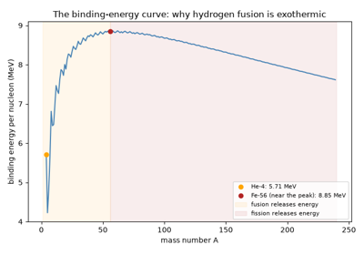
Bethe’s pp-chain and CNO cycle: the energy source of stars
1943 – Chandrasekhar’s Dynamical Friction#
Twelve years after his white dwarf work, Chandrasekhar turned to a different consequence of gravity acting between many bodies: a massive body moving through a sea of much lighter field stars does not glide through them unaffected, but feels a systematic drag force, opposite its own velocity, built up from the cumulative small-angle gravitational deflections of every star it passes. In “Dynamical Friction. I. General Considerations: the Coefficient of Dynamical Friction” (1943), he derived the resulting deceleration,
in terms of the background stellar density \(\rho\), the perturber’s mass \(M\) and velocity \(v_M\), and the Coulomb logarithm \(\ln\Lambda\) that regularizes the divergent contribution of distant encounters. Unlike ordinary friction, the effect grows with the perturber’s own mass rather than opposing motion through a fixed medium uniformly, so it acts overwhelmingly on the most massive objects present – globular clusters, satellite galaxies, and the black holes sinking toward galactic centers that dynamical friction alone can deliver there within a Hubble time.
Connection: the local density that sets the strength of Chandrasekhar’s
drag force is exactly what physicskit.astro.galactic_dynamics.nfw_density()
supplies for a satellite orbiting through an NFW halo; the resulting slow
inward spiral is, once the smooth background density is replaced by
individual field-star particles, precisely the kind of trajectory
physicskit.astro.nbody.NBodySystem integrates directly, one
gravitational deflection at a time rather than as a statistical drag
force.
References: S. Chandrasekhar, “Dynamical Friction. I. General Considerations: the Coefficient of Dynamical Friction,” ApJ 97, 255-262 (1943).
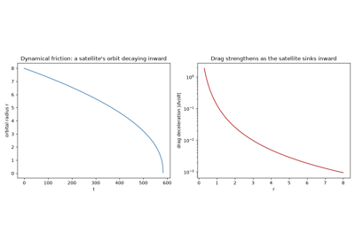
Chandrasekhar’s dynamical friction: a satellite spiraling inward
1955 – Parker’s Alpha-Omega Dynamo and the Solar Cycle#
By the 1950s it was clear that the Sun’s magnetic field could not simply be a fossil relic left over from formation: Ohmic diffusion alone would decay any large-scale solar field on a timescale far shorter than the Sun’s age, so something inside the Sun has to continuously regenerate it. Eugene Parker, in “Hydromagnetic Dynamo Models” (1955), proposed the mechanism still used today: turbulent convection in a rotating, electrically conducting fluid is systematically helical (“cyclonic,” in Parker’s own term) rather than random, so small-scale helical eddies statistically twist a large-scale toroidal (east-west) field into a poloidal (north-south, loop-shaped) one – the “alpha effect” – while the Sun’s differential rotation shears that poloidal field back into a toroidal one – the “Omega effect” – closing a self-sustaining regenerative cycle rather than a one-way decay. Solved as a linear eigenvalue problem, the coupled alpha-Omega equations admit growing, periodically reversing wave solutions that migrate in latitude as they oscillate, reproducing both the Sun’s roughly 11-year activity cycle and the equatorward drift of sunspot emergence latitudes charted in the observed “butterfly diagram.”
A separate result complicates any attempt to demonstrate the mechanism in a single, fully resolved, self-contained simulation: Yakov Zel’dovich showed in 1956 that a strictly two-dimensional flow – however vigorously turbulent – cannot sustain a magnetic field against Ohmic decay at all (the antidynamo theorem), so genuine dynamo action is unavoidably a three-dimensional, helical phenomenon that no planar convection simulation can produce on its own.
Implementation:
physicskit.astro.stellar_dynamo.simulate_stellar_convection() runs
a resolved 2D Boussinesq convection simulation – turbulent convective
rolls, the qualitative small-scale turbulence whose unresolved 3D helical
structure is, in the real Sun, the physical source of Parker’s alpha
effect – but, consistent with Zel’dovich’s theorem, this piece is not
itself a dynamo.
simulate_alpha_omega_dynamo()
instead solves the linearized 1D alpha-Omega mean-field equations
directly, with the alpha effect and rotational shear entered as
prescribed coefficients rather than derived from the convection above,
and this piece does robustly sustain and grow a large-scale field as a
traveling dynamo wave – reproducing the solar butterfly diagram’s
equatorward migration exactly as Parker’s theory predicts. The two
pieces are deliberately not coupled to one another.
References: E. N. Parker, “Hydromagnetic Dynamo Models,” ApJ 122, 293-314 (1955); Ya. B. Zel’dovich, “The Magnetic Field in the Two-Dimensional Motion of a Conducting Turbulent Fluid,” Zh. Eksp. Teor. Fiz. 31, 154-156 (1956) [Sov. Phys. JETP 4, 460-462 (1957)].
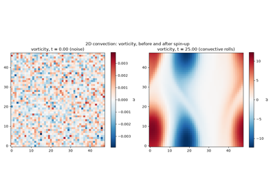
Stellar convection and the alpha-omega magnetic dynamo
1970s – Rubin and Ford’s Galaxy Rotation Curves#
Using a sensitive image-tube spectrograph, Vera Rubin and Kent Ford measured the rotation curve of the Andromeda Galaxy (M31) in 1970 and found it startling: rather than declining as \(v_c\propto 1/\sqrt r\) beyond the visible disk, as Keplerian motion around a centrally concentrated mass predicts, the curve showed no sign yet of the expected fall-off out to the edge of their optical survey – though that 1970 survey did not yet reach far into the galaxy’s faint outskirts, so it alone was suggestive rather than conclusive. Independent 21-cm radio observations soon closed that gap from a different direction entirely: Morton Roberts and Robert Whitehurst’s 1975 neutral-hydrogen survey traced M31’s rotation curve flat out to nearly twice the radius any optical study had reached, and Albert Bosma’s 1978 survey of dozens of spiral galaxies in HI found the same generic flatness holding galaxy after galaxy. It was over this same decade that Rubin, Ford, and Norbert Thonnard extended their own optical measurements to dozens of spiral galaxies (1978, 1980) and reached comparably large radii, and it is these later, far-outskirts curves – optical and radio alike – rather than the 1970 M31 paper on its own, that established flat rotation curves as a generic property of spiral galaxies rather than a peculiarity of one system. Because this evidence came from ordinary, easily observed galaxies rather than a single distant cluster, it proved far harder to dismiss than Zwicky’s result had been, and is generally credited with turning dark matter halos from a curiosity into the mainstream explanation for galactic dynamics.
Implementation:
physicskit.astro.galactic_dynamics.circular_velocity() is precisely
the quantity Rubin, Ford, Roberts, Whitehurst, and Bosma all measured (by
optical or radio means); supplying it a visible-matter enclosed-mass
profile predicts the falling curve Newtonian dynamics alone expects,
while supplying an extended profile such as
nfw_enclosed_mass() reproduces
the flat curves actually observed.
References: V. C. Rubin and W. K. Ford, Jr., “Rotation of the Andromeda Nebula from a Spectroscopic Survey of Emission Regions,” ApJ 159, 379-403 (1970); M. S. Roberts and R. N. Whitehurst, “The Rotation Curve and Geometry of M31 at Large Galactocentric Distances,” ApJ 201, 327-346 (1975); A. Bosma, “The Distribution and Kinematics of Neutral Hydrogen in Spiral Galaxies of Various Morphological Types,” Astron. J. 86, 1791-1846 (1978); V. C. Rubin, W. K. Ford, Jr., and N. Thonnard, “Extended Rotation Curves of High-Luminosity Spiral Galaxies. IV,” ApJ 225, L107-L111 (1978), and “Rotational Properties of 21 Sc Galaxies with a Large Range of Luminosities and Radii,” ApJ 238, 471-487 (1980).
Rotation curves, the NFW halo, and the dark-matter mass discrepancy
1993-2000 – Moore, Chenciner, Montgomery, and the Figure-Eight Choreography#
For two centuries after Newton, every known periodic solution of the three-body problem demanded either a special mass ratio or a rigidly symmetric configuration – Euler’s collinear solutions (1767), in which the three bodies stay always on one line, and Lagrange’s equilateral triangle (1772), in which they stay at the vertices of a rotating, rescaling triangle, chief among them. Searching numerically for periodic orbits with unusual symmetry, Cristopher Moore found something qualitatively different in 1993 (“Braids in Classical Dynamics,” Physical Review Letters 70, 3675): three equal masses chasing one another endlessly around a single figure-eight-shaped curve, each body trailing the next by exactly a third of a period, with no body playing a distinguished role at all – a choreography, rather than a rigid configuration. Moore’s numerical evidence was compelling but not a proof; it took Alain Chenciner and Richard Montgomery’s “A Remarkable Periodic Solution of the Three-Body Problem in the Case of Equal Masses” (2000, Annals of Mathematics 152, 881-901) to establish, using the calculus of variations, that the figure-eight orbit truly exists, by showing it minimizes the Newtonian action functional among an entire class of candidate collision-free paths. The result reopened the search for exotic periodic N-body solutions from a numerical curiosity into a rigorous subfield, launching two decades of subsequently discovered choreographies for larger numbers of bodies.
Implementation:
physicskit.astro.nbody.figure_eight_initial_conditions() returns
exactly Moore’s figure-eight initial condition – the positions,
velocities, and equal masses in \(G=1\) units – ready to hand to
NBodySystem’s symplectic leapfrog
integrator; unlike a generic three-body configuration, this one is
planar, collision-free, and exactly periodic, so even a short integration
already retraces the closed figure-eight curve.
physicskit.astro.visualizers.animate_nbody_trajectories() animates
all three bodies chasing each other around the curve, each in its own
color with a fading trail, making the choreography – each body
retracing the same path a third of a period behind the last – directly
visible.
References: C. Moore, “Braids in Classical Dynamics,” Phys. Rev. Lett. 70, 3675-3679 (1993), DOI 10.1103/PhysRevLett.70.3675; A. Chenciner and R. Montgomery, “A Remarkable Periodic Solution of the Three-Body Problem in the Case of Equal Masses,” Ann. Math. 152, 881-901 (2000), DOI 10.2307/2661357, arXiv:math/0011268.
2005 – Symplectic Integration and the Millennium Simulation#
Two threads that had been developing since the 1990s came together to enable N-body simulation at the scale needed to actually test the NFW profile’s origin from first principles. Algorithmically, Jack Wisdom and Matthew Holman, in “Symplectic Maps for the N-Body Problem” (1991, Astronomical Journal 102, 1528), showed that mixed-variable symplectic integrators – of which the kick-drift-kick leapfrog scheme is the simplest example – conserve phase-space volume and keep energy errors bounded rather than secularly drifting, making them uniquely suited to integrating gravitating systems over enormous numbers of dynamical times. At the scale of cosmological structure formation, Volker Springel and collaborators’ Millennium Simulation (2005) evolved roughly ten billion dark-matter particles under gravity alone, from smooth early-universe initial conditions to the present-day cosmic web, with the halos that formed self-consistently reproducing the Navarro-Frenk-White profile as an emergent result rather than an assumption. Direct N-body simulation, once limited to a few dozen bodies, had become a precision tool for cosmology itself.
Implementation: physicskit.astro.nbody.leapfrog_step() is exactly
this kick-drift-kick symplectic step;
physicskit.astro.nbody.NBodySystem wraps repeated steps into
step() and
simulate(), with
total_energy() and
total_angular_momentum() as the
conservation diagnostics that any symplectic N-body integrator – from a
three-body test case to a billion-particle cosmological run – must be
checked against.
References: J. Wisdom and M. Holman, “Symplectic Maps for the N-Body Problem,” Astron. J. 102, 1528-1538 (1991), DOI 10.1086/115978; V. Springel et al., “Simulations of the Formation, Evolution and Clustering of Galaxies and Quasars,” Nature 435, 629-636 (2005), DOI 10.1038/nature03597, arXiv:astro-ph/0504097.
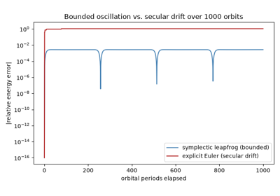
Symplectic integration and long-term N-body stability